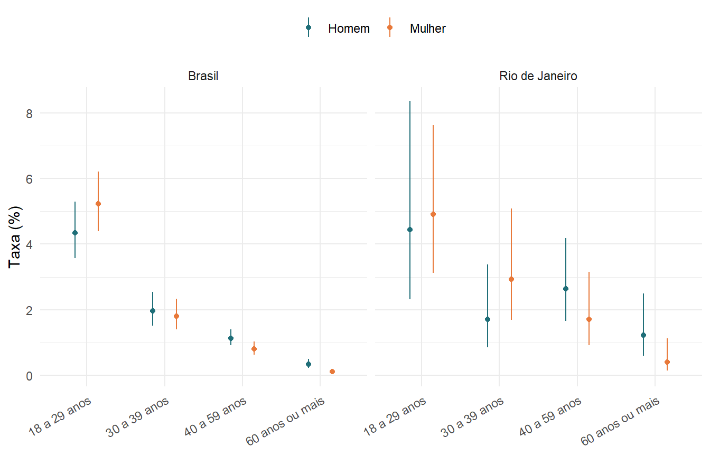

# Repositório do CRAN mantido pela Posit (RStudio), para instalar pacotes caso
# necessário
options(repos = c(CRAN = 'https://cran.rstudio.com'))
pacotes <- c(
'dplyr', 'tidyr', 'stringr', 'ggplot2', 'plotly', 'readr', 'survey',
'srvyr', 'broom', 'PNSIBGE'
)
# Para cada pacote, o require() tenta carregar e devolve FALSE se ele não
# estiver instalado; nesse caso, o install.packages() instala e o library()
# carrega. warn.conflicts = FALSE esconde as mensagens de funções com o
# mesmo nome em pacotes diferentes (por exemplo, filter() no dplyr e no stats)
for (pacote in pacotes) {
if (!require(pacote, character.only = TRUE, quietly = TRUE,
warn.conflicts = FALSE)) {
install.packages(pacote)
library(pacote, character.only = TRUE, warn.conflicts = FALSE)
}
}Dia 1: da pesquisa aos primeiros indicadores
3 horas · da pergunta de pesquisa às primeiras estimativas com precisão
O primeiro dia vai da pergunta de pesquisa às primeiras estimativas com intervalo de confiança e coeficiente de variação.
Programa
| Bloco | Conteúdo |
|---|---|
| 1. Enquadramento | Orientação sexual, violência e parentalidade sob a ótica de gênero e raça. Sexo e gênero na PNS. Orientação sexual como estatística experimental |
| 2. A PNS 2019 e o questionário | Desenho em três estágios, morador selecionado, Módulos V, Y, Z, R e S (perguntas iniciais), quem responde o quê |
| 3. A base | Geração da base com o PNSIBGE (mostrada pronta) e leitura com tipos definidos |
| 4. Das variáveis aos indicadores | Orientação sexual, violência psicológica, física e sexual, paternidade, maternidade e cor ou raça |
| 5. Desenho amostral e indicadores com precisão | srvyr com o peso do morador selecionado. Orientação sexual por sexo e idade, com erro-padrão, intervalo de confiança e coeficiente de variação |
1. Enquadramento
Este relatório constrói indicadores sobre três dimensões da vida da população adulta brasileira: a orientação sexual, a violência e a parentalidade. Em todas elas, a pergunta de fundo é a mesma: como essas experiências se distribuem entre homens e mulheres, entre grupos de cor ou raça e entre grupos de orientação sexual, e o que essas diferenças revelam sobre desigualdades e situações de vulnerabilidade.
- Orientação sexual. Segundo o IBGE, a PNS 2019 foi a primeira pesquisa domiciliar do Instituto a investigar a orientação sexual das pessoas. Até então, as informações disponíveis sobre o tema eram indiretas: os casais do mesmo sexo identificados no Censo Demográfico 2010 e em outras pesquisas domiciliares, e os casamentos entre pessoas do mesmo sexo registrados nas estatísticas do registro civil. A informação permite estimar o tamanho da população que se declara homossexual ou bissexual e comparar as suas condições de vida e de saúde com as da população heterossexual. Ela atende a uma demanda da Política Nacional de Saúde Integral LGBT, que prevê a inclusão do quesito nos instrumentos de vigilância em saúde.
- Violência. A violência interpessoal é um problema de saúde pública, com impactos físicos e psicológicos duradouros. A PNS 2019 investiga a violência psicológica, física e sexual, quem foi o agressor e onde ela ocorreu, o que permite ver como a violência contra as mulheres se concentra nas relações próximas e no domicílio.
- Parentalidade. A fecundidade costuma ser medida só pelas mulheres. A PNS 2019 incluiu um módulo respondido pelos próprios homens sobre paternidade e participação no pré-natal, o que permite comparar a experiência de pais e mães.
ImportanteSexo, gênero e orientação sexual na PNS 2019
- Sexo. A PNS registra o sexo da pessoa em duas categorias, homem e mulher. A pesquisa não investiga a identidade de gênero. Os indicadores comparam homens e mulheres, mas não permitem analisar a população trans ou de outras identidades de gênero.
- Orientação sexual autoidentificada. A pergunta “Qual é a sua orientação sexual?” capta como a pessoa se identifica. A orientação sexual tem outras dimensões, como a atração e o comportamento sexual, que a PNS não investiga: uma pessoa pode se declarar heterossexual e ter atração por pessoas do mesmo sexo.
- Estatística experimental. O IBGE divulgou os resultados de orientação sexual como estatísticas experimentais, ainda em avaliação. A pergunta é sensível: o estigma, o medo da discriminação, a falta de privacidade na entrevista e a dificuldade com termos como “heterossexual” podem levar a pessoa a não se declarar, a dizer que não sabe ou a se recusar a responder. As estimativas devem ser lidas com cautela, e as categorias “não sabe” e “recusou-se a responder” merecem atenção própria.
2. A PNS 2019 e o questionário
A Pesquisa Nacional de Saúde (PNS) é realizada pelo IBGE em convênio com o Ministério da Saúde. A primeira edição foi a campo em 2013, e a segunda, usada neste relatório, em 2019. A pesquisa investiga o acesso e o uso dos serviços de saúde, as condições de saúde da população e os fatores de risco para doenças crônicas, com atenção especial à equidade.
O desenho amostral. O plano amostral é conglomerado em três estágios, com estratificação das unidades primárias de amostragem. No primeiro estágio, são sorteadas as unidades primárias de amostragem (UPAs), formadas por setores censitários, a partir da Amostra Mestra do IBGE. No segundo, um número fixo de domicílios em cada UPA. No terceiro, um morador de 15 anos ou mais em cada domicílio, sorteado no momento da entrevista: o morador selecionado.
Três questionários. O questionário do domicílio trata das características da moradia. O questionário dos moradores traz as características de todas as pessoas, como sexo, idade, cor ou raça, educação, trabalho e rendimento. O questionário individual é respondido pelo morador selecionado, que fala por si, e traz os temas sensíveis deste relatório. Por isso, todas as estimativas usam o peso do morador selecionado, que expande a amostra de moradores selecionados para a população de 15 anos ou mais.
Quem responde o quê. Cada módulo do questionário individual tem a sua população:
| Dimensão | Módulo da PNS 2019 | Quem responde |
|---|---|---|
| Orientação sexual | Y. Atividade sexual (pergunta final do módulo) | Morador selecionado de 18 anos ou mais |
| Violência | V. Violência | Morador selecionado de 18 anos ou mais |
| Paternidade | Z. Paternidade e pré-natal do parceiro | Homens selecionados de 15 anos ou mais |
| Maternidade | S. Atendimento pré-natal (só as perguntas iniciais: gravidez, número de partos e data do último parto) | Mulheres selecionadas de 15 anos ou mais |
| Saúde da mulher | R. Saúde da mulher (contracepção e planejamento familiar) | Mulheres selecionadas de 15 anos ou mais |
Questionário e dicionário. O questionário mostra as perguntas como foram feitas e a quem cada uma se aplica. O dicionário dos microdados dá o nome de cada variável no arquivo, as suas categorias e os seus códigos. Os dois estão na página de documentação dos microdados da PNS 2019, no arquivo Dicionario_e_input (o dicionário é a planilha dicionario_PNS_microdados_2019.xls). As variáveis cujo nome começa com VD são variáveis derivadas, construídas pelo IBGE a partir de várias perguntas, como o nível de instrução e a faixa de rendimento domiciliar per capita.
NotaViolência: um questionário novo em 2019
Em 2013, a PNS considerava vítima de violência quem respondia “sim” a duas perguntas diretas, sobre agressão por pessoa desconhecida e por pessoa conhecida. Em 2019, o questionário passou a listar situações concretas de agressão psicológica, física e sexual, e é vítima quem responde “sim” a pelo menos uma delas. Por isso, os resultados de violência das duas edições não são comparáveis.
3. A base
Pacotes
Parâmetros
Os recortes geográficos vêm do cabeçalho do relatório, no parâmetro recortes. O Brasil entra sempre; os recortes são acrescentados a ele e podem ser siglas de UF ("RJ") ou nomes de Grandes Regiões ("Sudeste"). O bloco abaixo confere os recortes antes de qualquer cálculo e interrompe o relatório, com uma mensagem clara, se algum não existir.
# Código, sigla e nome de cada UF, com a sua Grande Região. O código é o da
# variável V0001 da PNS
tabela_ufs <- tribble(
~V0001, ~sigla, ~nome_uf, ~regiao,
11, 'RO', 'Rondônia', 'Norte',
12, 'AC', 'Acre', 'Norte',
13, 'AM', 'Amazonas', 'Norte',
14, 'RR', 'Roraima', 'Norte',
15, 'PA', 'Pará', 'Norte',
16, 'AP', 'Amapá', 'Norte',
17, 'TO', 'Tocantins', 'Norte',
21, 'MA', 'Maranhão', 'Nordeste',
22, 'PI', 'Piauí', 'Nordeste',
23, 'CE', 'Ceará', 'Nordeste',
24, 'RN', 'Rio Grande do Norte', 'Nordeste',
25, 'PB', 'Paraíba', 'Nordeste',
26, 'PE', 'Pernambuco', 'Nordeste',
27, 'AL', 'Alagoas', 'Nordeste',
28, 'SE', 'Sergipe', 'Nordeste',
29, 'BA', 'Bahia', 'Nordeste',
31, 'MG', 'Minas Gerais', 'Sudeste',
32, 'ES', 'Espírito Santo', 'Sudeste',
33, 'RJ', 'Rio de Janeiro', 'Sudeste',
35, 'SP', 'São Paulo', 'Sudeste',
41, 'PR', 'Paraná', 'Sul',
42, 'SC', 'Santa Catarina', 'Sul',
43, 'RS', 'Rio Grande do Sul', 'Sul',
50, 'MS', 'Mato Grosso do Sul', 'Centro-Oeste',
51, 'MT', 'Mato Grosso', 'Centro-Oeste',
52, 'GO', 'Goiás', 'Centro-Oeste',
53, 'DF', 'Distrito Federal', 'Centro-Oeste'
)
# Cada recorte precisa ser uma sigla de UF ou o nome de uma Grande Região
recortes <- params$recortes
validos <- c(tabela_ufs$sigla, unique(tabela_ufs$regiao))
invalidos <- setdiff(recortes, validos)
if (length(invalidos) > 0) {
stop('Recorte não encontrado: ', paste(invalidos, collapse = ', '),
'. Use siglas de UF (por exemplo, "RJ") ou nomes de Grandes ',
'Regiões ("Norte", "Nordeste", "Sudeste", "Sul", "Centro-Oeste").')
}
# Cache: os blocos com cache: true guardam o resultado e só são calculados
# de novo quando o código do bloco muda. Com a opção abaixo, também quando
# os recortes mudam ou quando a base muda (a impressão digital md5 do arquivo)
knitr::opts_chunk$set(cache.extra = list(
recortes = params$recortes,
base = unname(tools::md5sum('dados/pns_2019_selecionados.csv.gz'))
))A geração da base
A base do curso foi gerada a partir dos microdados da PNS 2019 com o pacote PNSIBGE. A função get_pns() baixa os microdados do IBGE e, com selected = TRUE, devolve só os moradores selecionados, com o peso do morador selecionado. O argumento vars escolhe as variáveis; as variáveis de identificação e do desenho amostral vêm sempre.
O bloco abaixo só roda com o parâmetro gerar_base: true. Ele baixa o arquivo de microdados do IBGE (cerca de 28 MB) e grava a base do curso na pasta dados. Em sala, a base já está pronta nessa pasta.
# Executado só com gerar_base: true. O if protege quem roda o bloco pelo play
# do RStudio, que ignora a opção eval
if (params$gerar_base) {
# Variáveis do curso, além das de identificação e do desenho amostral
variaveis <- c(
# Localização: situação urbana ou rural e tipo de área
'V0026', 'V0031',
# Características da pessoa e do domicílio
'C006', 'C008', 'C009', 'C004', 'C011', 'VDD004A', 'VDF003', 'VDF004',
# Violência (Módulo V)
'V001', 'V00101',
'V00201', 'V00202', 'V00203', 'V00204', 'V00205', 'V006', 'V007',
'V01401', 'V01402', 'V01403', 'V01404', 'V01405', 'V018', 'V019',
'V02701', 'V02702', 'V02801', 'V02802', 'V032', 'V033', 'V034',
# Atividade sexual e orientação sexual (Módulo Y)
'Y001', 'Y00101', 'Y002', 'Y003', 'Y008',
# Paternidade (Módulo Z)
'Z001', 'Z00101', 'Z00102', 'Z002', 'Z003', 'Z004', 'Z005', 'Z006',
'Z007', 'Z008', 'Z009', 'Z010', 'Z011', 'Z012',
# Maternidade (perguntas iniciais do Módulo S)
'S065', 'S066', 'S06701', 'S06702', 'S06703',
# Saúde da mulher (Módulo R)
'R031', 'R032', 'R034', 'VDR001'
)
pns_bruta <- get_pns(year = 2019, selected = TRUE, vars = variaveis,
labels = FALSE, deflator = FALSE, design = FALSE,
savedir = tempdir())
# Identificação, localização e desenho amostral: só o peso do morador
# selecionado (V0029 sem calibração, V00291 com calibração) e a projeção de
# população usada na calibração (V00292 e V00293)
pns_base <- pns_bruta |>
select(ID_DOMICILIO, V0001, V0024, UPA_PNS,
V0029, V00291, V00292, V00293, all_of(variaveis))
dir.create('dados', showWarnings = FALSE)
write_csv(pns_base, 'dados/pns_2019_selecionados.csv.gz', na = '')
}
AvisoSó o peso do morador selecionado
O microdado da PNS tem três conjuntos de pesos: o dos domicílios e moradores (V0028), o do morador selecionado (V0029) e o da antropometria (V0030), cada um com a sua versão calibrada e a sua projeção de população. A função pns_design(), que monta o desenho amostral no bloco 5, usa o primeiro conjunto que encontra na base, nessa ordem. Por isso, a base do curso guarda só o conjunto do morador selecionado: assim, não há como o desenho usar o peso errado.
A leitura da base
A base é um arquivo .csv.gz com os códigos das variáveis, como no dicionário do IBGE. Na leitura, o tipo de cada coluna é definido: sem essa definição, o readr adivinha e erra nos dois sentidos (identificadores viram número; códigos com zero à esquerda viram texto). Os identificadores e os códigos do desenho ficam como texto, os códigos das categorias como números inteiros, e os pesos, as idades e as contagens como números.
# Tipos das colunas: texto para identificadores e códigos do desenho, número
# para pesos e projeções; as demais colunas, códigos de categorias, idades e
# contagens, como inteiros
tipos <- cols(
ID_DOMICILIO = col_character(),
V0024 = col_character(),
UPA_PNS = col_character(),
V00293 = col_character(),
V0029 = col_double(),
V00291 = col_double(),
V00292 = col_double(),
VDF003 = col_double(),
.default = col_integer()
)
# A base fica na pasta dados, ao lado do relatório
arquivo_base <- 'dados/pns_2019_selecionados.csv.gz'
if (!file.exists(arquivo_base)) {
stop('A base não está em ', arquivo_base, '. Rode o relatório com ',
'gerar_base: true, que baixa os microdados do IBGE e grava a base.')
}
pns <- read_csv(arquivo_base, col_types = tipos)
# Qualquer valor que não coube no tipo definido vira NA com aviso: melhor parar
if (nrow(problems(pns)) > 0) {
print(problems(pns))
stop('Valores que não couberam no tipo definido na leitura da base.')
}
glimpse(pns)Rows: 90,846
Columns: 69
$ ID_DOMICILIO <chr> "1100000160001", "1100000160002", "1100000160003", "11000…
$ V0001 <int> 11, 11, 11, 11, 11, 11, 11, 11, 11, 11, 11, 11, 11, 11, 1…
$ V0024 <chr> "1110011", "1110011", "1110011", "1110011", "1110011", "1…
$ UPA_PNS <chr> "110000016", "110000016", "110000016", "110000016", "1100…
$ V0029 <dbl> 256.76725, 342.35634, 427.94542, 85.58908, 85.58908, 85.5…
$ V00291 <dbl> 368.8752, 508.1071, 614.7919, 122.9584, 121.2846, 117.758…
$ V00292 <dbl> 69788.66, 27709.94, 69788.66, 69788.66, 68501.61, 25182.2…
$ V00293 <chr> "11124", "11122", "11124", "11124", "11123", "11115", "11…
$ V0026 <int> 1, 1, 1, 1, 1, 1, 1, 1, 1, 1, 1, 1, 1, 1, 1, 1, 1, 1, 1, …
$ V0031 <int> 1, 1, 1, 1, 1, 1, 1, 1, 1, 1, 1, 1, 1, 1, 1, 1, 1, 1, 1, …
$ C006 <int> 2, 2, 2, 2, 2, 1, 2, 2, 1, 1, 2, 1, 2, 2, 1, 1, 1, 2, 1, …
$ C008 <int> 55, 19, 45, 58, 28, 81, 41, 38, 33, 81, 52, 36, 56, 22, 3…
$ C009 <int> 1, 4, 2, 2, 4, 4, 4, 1, 4, 4, 4, 1, 4, 4, 4, 1, 4, 1, 1, …
$ C004 <int> 1, 5, 1, 1, 1, 1, 1, 2, 1, 1, 1, 1, 1, 10, 4, 1, 5, 1, 2,…
$ C011 <int> 1, 4, 4, 3, 4, 4, 1, 4, 4, 2, 4, 2, 1, 4, 4, 1, 4, 4, 1, …
$ VDD004A <int> 2, 4, 5, 1, 6, 2, 5, 5, 4, 2, 2, 5, 2, 2, 6, 7, 7, 7, 7, …
$ VDF003 <dbl> 350, 250, 500, 324, 0, 998, 999, 250, 700, 1398, 125, 160…
$ VDF004 <int> 2, 2, 3, 2, 1, 3, 4, 1, 3, 4, 1, 4, 3, 1, 7, 7, 6, 4, 7, …
$ V001 <int> 1, 1, 2, 1, 1, 1, 1, 1, 1, 1, 2, 1, 1, 2, 1, 1, 2, 1, 1, …
$ V00101 <int> 2, 2, 2, 2, 1, 2, 2, 2, 2, 2, 2, 2, 2, 2, 1, 1, 2, 1, 1, …
$ V00201 <int> 2, 2, 2, 2, 2, 2, 2, 2, 1, 2, 2, 2, 2, 2, 2, 2, 2, 2, 2, …
$ V00202 <int> 2, 2, 2, 2, 2, 2, 2, 2, 1, 2, 2, 2, 2, 2, 2, 1, 2, 2, 2, …
$ V00203 <int> 2, 2, 2, 2, 2, 2, 2, 2, 2, 2, 2, 2, 2, 2, 1, 2, 2, 2, 2, …
$ V00204 <int> 2, 2, 2, 2, 2, 2, 2, 2, 1, 2, 2, 2, 2, 2, 2, 2, 2, 2, 2, …
$ V00205 <int> 2, 2, 2, 2, 2, 2, 2, 2, 2, 2, 2, 2, 2, 2, 2, 2, 2, 2, 2, …
$ V006 <int> NA, NA, NA, NA, NA, NA, NA, NA, 8, NA, NA, NA, NA, NA, 2,…
$ V007 <int> NA, NA, NA, NA, NA, NA, NA, NA, 5, NA, NA, NA, NA, NA, 6,…
$ V01401 <int> 2, 2, 2, 2, 2, 2, 2, 2, 2, 2, 2, 2, 2, 2, 2, 1, 2, 1, 2, …
$ V01402 <int> 2, 2, 2, 2, 2, 2, 2, 2, 2, 2, 2, 2, 2, 2, 2, 2, 2, 1, 2, …
$ V01403 <int> 2, 2, 2, 2, 2, 2, 2, 2, 2, 2, 2, 2, 2, 2, 2, 1, 2, 2, 2, …
$ V01404 <int> 2, 2, 2, 2, 2, 2, 2, 2, 2, 2, 2, 2, 2, 2, 2, 2, 2, 2, 2, …
$ V01405 <int> 2, 2, 2, 2, 2, 2, 2, 2, 2, 2, 2, 2, 2, 2, 2, 2, 2, 2, 2, …
$ V018 <int> NA, NA, NA, NA, NA, NA, NA, NA, NA, NA, NA, NA, NA, NA, N…
$ V019 <int> NA, NA, NA, NA, NA, NA, NA, NA, NA, NA, NA, NA, NA, NA, N…
$ V02701 <int> 2, 2, 2, 2, 2, 2, 2, 2, 1, 2, 2, 2, 2, 2, 2, 2, 2, 2, 2, …
$ V02702 <int> 2, 2, 2, 2, 2, 2, 2, 2, 2, 2, 2, 2, 2, 2, 2, 2, 2, 2, 2, …
$ V02801 <int> 2, 2, 2, 2, 2, 2, 2, 2, NA, 2, 2, 2, 2, 2, 2, 2, 2, 2, 2,…
$ V02802 <int> 2, 2, 2, 2, 2, 2, 2, 2, NA, 2, 2, 2, 2, 2, 2, 2, 2, 2, 2,…
$ V032 <int> NA, NA, NA, NA, NA, NA, NA, NA, 1, NA, NA, NA, NA, NA, NA…
$ V033 <int> NA, NA, NA, NA, NA, NA, NA, NA, 1, NA, NA, NA, NA, NA, NA…
$ V034 <int> NA, NA, NA, NA, NA, NA, NA, NA, 1, NA, NA, NA, NA, NA, 2,…
$ Y001 <int> 1, 4, 1, 4, 4, 1, 4, 4, 3, 1, 4, 1, 1, 1, 1, 1, 1, 1, 1, …
$ Y00101 <int> 17, NA, 17, NA, NA, 18, NA, NA, NA, 16, NA, 18, 15, 13, 1…
$ Y002 <int> 1, 3, 1, 3, 3, 3, 3, 3, 1, 2, 3, 1, 2, 1, 1, 1, 2, 1, 1, …
$ Y003 <int> 3, NA, 1, NA, NA, NA, NA, NA, 1, NA, NA, 1, NA, 1, 2, 3, …
$ Y008 <int> 1, 1, 1, 1, 1, 6, 1, 1, 1, 1, 1, 1, 1, 1, 1, 1, 3, 1, 1, …
$ Z001 <int> NA, NA, NA, NA, NA, 1, NA, NA, 1, 1, NA, 2, NA, NA, 2, 1,…
$ Z00101 <int> NA, NA, NA, NA, NA, 5, NA, NA, 0, 4, NA, NA, NA, NA, NA, …
$ Z00102 <int> NA, NA, NA, NA, NA, 4, NA, NA, 1, 3, NA, NA, NA, NA, NA, …
$ Z002 <int> NA, NA, NA, NA, NA, 22, NA, NA, 24, 32, NA, NA, NA, NA, N…
$ Z003 <int> NA, NA, NA, NA, NA, 38, NA, NA, 9, 33, NA, NA, NA, NA, NA…
$ Z004 <int> NA, NA, NA, NA, NA, 2, NA, NA, 2, 2, NA, 2, NA, NA, 2, 2,…
$ Z005 <int> NA, NA, NA, NA, NA, NA, NA, NA, NA, NA, NA, NA, NA, NA, N…
$ Z006 <int> NA, NA, NA, NA, NA, NA, NA, NA, NA, NA, NA, NA, NA, NA, N…
$ Z007 <int> NA, NA, NA, NA, NA, NA, NA, NA, NA, NA, NA, NA, NA, NA, N…
$ Z008 <int> NA, NA, NA, NA, NA, NA, NA, NA, NA, NA, NA, NA, NA, NA, N…
$ Z009 <int> NA, NA, NA, NA, NA, NA, NA, NA, NA, NA, NA, NA, NA, NA, N…
$ Z010 <int> NA, NA, NA, NA, NA, NA, NA, NA, NA, NA, NA, NA, NA, NA, N…
$ Z011 <int> NA, NA, NA, NA, NA, NA, NA, NA, NA, NA, NA, NA, NA, NA, N…
$ Z012 <int> NA, NA, NA, NA, NA, NA, NA, NA, NA, NA, NA, NA, NA, NA, N…
$ S065 <int> 1, 2, 1, 2, 1, NA, 1, 1, NA, NA, 1, NA, 1, 1, NA, NA, NA,…
$ S066 <int> 4, NA, 2, NA, 1, NA, 3, 4, NA, NA, 1, NA, 6, 1, NA, NA, N…
$ S06701 <int> 13, NA, 9, NA, 23, NA, 1, 14, NA, NA, 15, NA, 19, 10, NA,…
$ S06702 <int> 9, NA, 4, NA, 7, NA, 10, 3, NA, NA, 12, NA, 9, 6, NA, NA,…
$ S06703 <int> 1987, NA, 1994, NA, 2018, NA, 2000, 2005, NA, NA, 1992, N…
$ R031 <int> NA, 3, 1, NA, 3, NA, 3, 3, NA, NA, NA, NA, NA, 1, NA, NA,…
$ R032 <int> NA, NA, 2, NA, NA, NA, NA, NA, NA, NA, NA, NA, NA, 2, NA,…
$ R034 <int> NA, NA, 2, NA, NA, NA, NA, NA, NA, NA, NA, NA, NA, 2, NA,…
$ VDR001 <int> NA, NA, 1, NA, NA, NA, NA, NA, NA, NA, NA, NA, NA, NA, NA…4. Das variáveis aos indicadores
Os códigos da base viram variáveis com nomes e categorias legíveis. Cada indicador do relatório parte de uma dessas variáveis, como mostra a tabela “Das variáveis aos indicadores”, no fim desta seção.
Características da pessoa e do domicílio
As categorias de idade, nível de instrução e cor ou raça seguem as publicações do IBGE sobre a PNS 2019. Na cor ou raça, as pessoas amarelas e indígenas formam o grupo “Outras”, pequeno demais para ser analisado sozinho; as dez pessoas com cor ou raça ignorada ficam sem categoria (NA).
pns <- pns |>
left_join(tabela_ufs, by = 'V0001') |>
mutate(
sexo = factor(C006, levels = 1:2, labels = c('Homem', 'Mulher')),
idade = C008,
# Grupos de idade da população adulta (18 anos ou mais), usados nos
# indicadores de orientação sexual e de violência
faixa_etaria = case_when(
idade >= 18 & idade <= 29 ~ '18 a 29 anos',
idade >= 30 & idade <= 39 ~ '30 a 39 anos',
idade >= 40 & idade <= 59 ~ '40 a 59 anos',
idade >= 60 ~ '60 anos ou mais'
),
# Grupos de idade a partir de 15 anos, usados nos indicadores de
# parentalidade, como nas publicações do IBGE
faixa_etaria_15 = case_when(
idade <= 29 ~ '15 a 29 anos',
idade <= 39 ~ '30 a 39 anos',
idade <= 59 ~ '40 a 59 anos',
.default = '60 anos ou mais'
),
cor_raca = case_when(
C009 == 1 ~ 'Branca',
C009 == 2 ~ 'Preta',
C009 == 4 ~ 'Parda',
C009 %in% c(3, 5) ~ 'Outras'
),
cor_raca = factor(cor_raca, levels = c('Branca', 'Preta', 'Parda', 'Outras')),
instrucao = case_when(
VDD004A %in% 1:2 ~ 'Sem instrução e fundamental incompleto',
VDD004A %in% 3:4 ~ 'Fundamental completo e médio incompleto',
VDD004A %in% 5:6 ~ 'Médio completo e superior incompleto',
VDD004A == 7 ~ 'Superior completo'
),
instrucao = factor(instrucao, levels = c(
'Sem instrução e fundamental incompleto',
'Fundamental completo e médio incompleto',
'Médio completo e superior incompleto',
'Superior completo'
)),
situacao = factor(V0026, levels = 1:2, labels = c('Urbana', 'Rural')),
# Faixas de rendimento domiciliar per capita, em salários mínimos
rendimento = factor(VDF004, levels = 1:7, labels = c(
'Até 1/4 SM', 'Mais de 1/4 a 1/2 SM', 'Mais de 1/2 a 1 SM',
'Mais de 1 a 2 SM', 'Mais de 2 a 3 SM', 'Mais de 3 a 5 SM',
'Mais de 5 SM'
)),
adulto = if_else(idade >= 18, 1, 0)
)Orientação sexual
A pergunta Y008 foi feita às pessoas de 18 anos ou mais. A variável orientacao_sexual junta homossexuais e bissexuais, como nas tabelas do IBGE, e mantém as respostas “não sabe” e “recusou-se a responder” como uma categoria própria, e não como dado faltante: elas dizem algo sobre a dificuldade de captar o tema.
pns <- pns |>
mutate(
orientacao_sexual = case_when(
Y008 == 1 ~ 'Heterossexual',
Y008 %in% 2:3 ~ 'Homossexual ou bissexual',
Y008 == 4 ~ 'Outra orientação',
Y008 %in% 5:6 ~ 'Não sabe ou recusou-se'
),
orientacao_sexual = factor(orientacao_sexual, levels = c(
'Heterossexual', 'Homossexual ou bissexual', 'Outra orientação',
'Não sabe ou recusou-se'
)),
# Dummy: 1 para homossexual ou bissexual, 0 para as demais respostas
# (inclusive não sabe e recusa); NA abaixo de 18 anos
homo_bi = if_else(Y008 %in% 2:3, 1, 0),
homo_bi = if_else(adulto == 1, homo_bi, NA),
# Dummy: 1 para não sabe ou recusou-se, 0 para as demais respostas
orientacao_nao_respondida = if_else(Y008 %in% 5:6, 1, 0),
orientacao_nao_respondida = if_else(adulto == 1, orientacao_nao_respondida, NA)
)Violência
Uma pessoa é vítima de um tipo de violência quando responde “sim” (código 1) a pelo menos uma das situações listadas para esse tipo, nos 12 meses anteriores à entrevista. As perguntas foram feitas às pessoas de 18 anos ou mais; abaixo dessa idade, as dummies ficam NA.
| Tipo | Situações (12 meses) | Variáveis |
|---|---|---|
| Psicológica | Ofendido, humilhado ou ridicularizado; gritaram ou xingaram; ameaçado ou exposto pelas redes sociais ou celular; ameaçaram ferir alguém importante; destruíram algo de propósito | V00201 a V00205 |
| Física | Tapa ou bofetada; empurrado, segurado com força ou jogaram algo; soco, chute ou arrastado pelo cabelo; estrangulado, asfixiado ou queimado; ameaçado ou ferido com faca, arma de fogo ou outro objeto | V01401 a V01405 |
| Sexual | Tocado, manipulado, beijado ou com partes do corpo expostas contra a vontade; ameaçado ou forçado a ter relações ou atos sexuais | V02701 e V02702 |
A violência sexual alguma vez na vida junta as vítimas nos 12 meses e as pessoas que, sem violência sexual nos 12 meses, responderam “sim” às mesmas situações em algum momento da vida (V02801 e V02802, perguntadas só a quem respondeu “não” às duas anteriores).
pns <- pns |>
mutate(
# if_any() devolve TRUE se pelo menos uma das variáveis for 1. Abaixo de
# 18 anos, as respostas são NA, e o resultado também
violencia_psicologica = if_else(if_any(V00201:V00205, ~ .x == 1), 1, 0),
violencia_fisica = if_else(if_any(V01401:V01405, ~ .x == 1), 1, 0),
violencia_sexual = if_else(if_any(V02701:V02702, ~ .x == 1), 1, 0),
# Qualquer dos três tipos
violencia = if_else(
violencia_psicologica == 1 | violencia_fisica == 1 |
violencia_sexual == 1, 1, 0
),
# Alguma vez na vida: nos 12 meses ou antes. Para as vítimas nos 12 meses,
# V02801 e V02802 são NA, e o | com TRUE dá TRUE
violencia_sexual_vida = if_else(
violencia_sexual == 1 | V02801 %in% 1 | V02802 %in% 1, 1, 0
)
)Para cada tipo de violência, a vítima informou quem foi o agressor e o local da única ocorrência ou da mais grave. As funções abaixo agrupam os códigos do dicionário, que são os mesmos nos três tipos. Os grupos de agressor seguem as tabelas do IBGE, para que os resultados possam ser comparados com a publicação.
# Agressor: os códigos 01 a 13 do dicionário (V006, V018 e V032), agrupados
# como nas tabelas do IBGE. Outro parente (07) fica em "Outros"
agrupa_agressor <- function(codigo) {
agressor <- case_when(
codigo %in% 1:3 ~ 'Cônjuge, companheiro(a), namorado(a) ou ex',
codigo %in% 4:6 ~ 'Pai, mãe, padrasto, madrasta, irmão(ã) ou filho(a)',
codigo == 8 ~ 'Amigo(a), colega ou vizinho(a)',
codigo == 11 ~ 'Pessoa desconhecida',
codigo %in% c(7, 9, 10, 12, 13) ~ 'Outros'
)
factor(agressor, levels = c(
'Cônjuge, companheiro(a), namorado(a) ou ex',
'Pai, mãe, padrasto, madrasta, irmão(ã) ou filho(a)',
'Amigo(a), colega ou vizinho(a)', 'Pessoa desconhecida', 'Outros'
))
}
# Local: residência, trabalho e via pública; os demais em "Outros" (V007,
# V019 e V033; só a V007 tem a opção internet, código 6)
agrupa_local <- function(codigo) {
local <- case_when(
codigo == 1 ~ 'Residência',
codigo == 2 ~ 'Trabalho',
codigo == 5 ~ 'Via pública ou outro local público',
!is.na(codigo) ~ 'Outros'
)
factor(local, levels = c(
'Residência', 'Trabalho', 'Via pública ou outro local público', 'Outros'
))
}
pns <- pns |>
mutate(
agressor_psicologica = agrupa_agressor(V006),
agressor_fisica = agrupa_agressor(V018),
agressor_sexual = agrupa_agressor(V032),
local_psicologica = agrupa_local(V007),
local_fisica = agrupa_local(V019),
local_sexual = agrupa_local(V033)
)Parentalidade
A paternidade vem do Módulo Z, respondido pelos homens selecionados de 15 anos ou mais. A maternidade vem das perguntas iniciais do Módulo S, respondidas pelas mulheres selecionadas de 15 anos ou mais. As perguntas não são iguais:
- os homens informam se têm filhos biológicos (
Z001) e quantos são, homens (Z00101) e mulheres (Z00102); - as mulheres informam se alguma vez ficaram grávidas (
S065) e quantos partos tiveram (S066).
Por isso, a comparação entre pais e mães usa duas aproximações: ter tido filho (homens) ou parto (mulheres), e o número de filhos (homens) ou de partos (mulheres). Um parto de gêmeos conta como um parto, e uma gravidez que não chegou ao fim não conta como parto. A idade ao nascimento do primeiro filho (Z002) só existe para os homens.
Os denominadores seguem as publicações do IBGE. Na paternidade, são todos os homens de 15 anos ou mais: quem respondeu “não sabe” ou teve a resposta ignorada fica no denominador, fora do numerador. Na participação no pré-natal, são todos os homens com mulher grávida ou com filho de menos de 6 anos (os que responderam à pergunta Z005), inclusive aqueles cuja parceira não fez pré-natal.
pns <- pns |>
mutate(
# Homens: tem filho biológico (Z001: 1 sim, 2 não, 3 não sabe, 9 ignorado).
# Não sabe e ignorado ficam no denominador, como nas tabelas do IBGE
pai = if_else(Z001 == 1, 1, 0),
filhos_pai = case_when(
Z001 == 2 ~ 0,
Z001 == 1 & Z00101 != 99 & Z00102 != 99 ~ Z00101 + Z00102
),
idade_primeiro_filho = if_else(Z002 == 99, NA, Z002),
# Mulheres: teve parto (S065: alguma vez grávida; S066: número de
# partos, perguntado só a quem já engravidou; 99 = ignorado)
mae = case_when(
S065 == 2 ~ 0,
S066 == 0 ~ 0,
S066 >= 1 & S066 <= 30 ~ 1
),
partos_mae = case_when(
S065 == 2 ~ 0,
S066 <= 30 ~ S066
),
# As duas aproximações numa variável só, para comparar homens e mulheres
tem_filho = if_else(sexo == 'Homem', pai, mae),
numero_filhos = if_else(sexo == 'Homem', filhos_pai, partos_mae),
# Pré-natal do parceiro. Denominador: homens com mulher grávida ou com
# filho de menos de 6 anos, os que responderam à Z005. A Z008 (acompanhou
# o pré-natal: 1 sim, 2 não, 9 ignorado) só foi perguntada quando houve
# pré-natal (Z006 = 1); sem pré-natal, o homem conta como não acompanhou
acompanhou_prenatal = if_else(!is.na(Z005), if_else(Z008 %in% 1, 1, 0), NA)
)Das variáveis aos indicadores
| Indicador | Tipo | Numerador | Denominador | Variáveis |
|---|---|---|---|---|
| Orientação sexual | ||||
| Distribuição por orientação sexual | Distribuição | Pessoas em cada categoria | Pessoas de 18 anos ou mais | orientacao_sexual |
| Taxa de pessoas homossexuais ou bissexuais | Taxa | Pessoas homossexuais ou bissexuais | Pessoas de 18 anos ou mais | homo_bi |
| Taxa de não resposta à orientação sexual | Taxa | Pessoas que não sabem ou se recusaram a responder | Pessoas de 18 anos ou mais | orientacao_nao_respondida |
| Violência | ||||
| Taxa de violência (qualquer tipo), psicológica, física e sexual nos 12 meses | Taxa | Vítimas de cada tipo | Pessoas de 18 anos ou mais | violencia, violencia_psicologica, violencia_fisica, violencia_sexual |
| Taxa de violência sexual alguma vez na vida | Taxa | Vítimas, nos 12 meses ou antes | Pessoas de 18 anos ou mais | violencia_sexual_vida |
| Agressor e local da ocorrência | Distribuição | Vítimas em cada categoria | Vítimas de cada tipo | agressor_*, local_* |
| Parentalidade | ||||
| Taxa de homens que já foram pais | Taxa | Homens com filho biológico | Homens de 15 anos ou mais | pai |
| Taxa de mulheres que já tiveram parto | Taxa | Mulheres com pelo menos um parto | Mulheres de 15 anos ou mais | mae |
| Número médio de filhos (homens) ou de partos (mulheres) | Média | Soma dos filhos ou dos partos | Homens ou mulheres de 15 anos ou mais | numero_filhos |
| Idade média ao nascimento do primeiro filho | Média | Soma das idades | Homens com filho biológico | idade_primeiro_filho |
| Taxa de participação no pré-natal | Taxa | Homens que acompanharam o pré-natal | Homens com mulher grávida ou com filho de menos de 6 anos | acompanhou_prenatal |
5. Desenho amostral e indicadores com precisão
A estimativa pontual: a soma dos pesos
Cada morador selecionado representa um número de pessoas da população: o seu peso, V00291. Uma taxa é a soma dos pesos das pessoas do numerador dividida pela soma dos pesos das pessoas do denominador. Com o dplyr, a taxa de pessoas homossexuais ou bissexuais entre os adultos, por sexo, é:
pns |>
filter(adulto == 1) |>
group_by(sexo) |>
summarise(
pessoas_amostra = n(),
taxa_homo_bi = sum(V00291 * homo_bi) / sum(V00291) * 100
)# A tibble: 2 × 3
sexo pessoas_amostra taxa_homo_bi
<fct> <int> <dbl>
1 Homem 41662 1.90
2 Mulher 46869 1.78A conta dá a estimativa pontual, a mesma que o desenho amostral vai dar abaixo. Mas ela não diz o quão precisa é a estimativa: para isso, é preciso saber como a amostra foi sorteada.
O desenho amostral
A função pns_design(), do PNSIBGE, monta o desenho a partir da base: os estratos (V0024), as UPAs (UPA_PNS), o peso do morador selecionado sem calibração (V0029) e a calibração pela projeção de população (V00292, por domínio V00293). O peso calibrado que resulta é igual ao V00291. Com cerca de 90 mil moradores selecionados, o desenho fica pronto em menos de um segundo.
desenho <- pns_design(pns)
# O peso do desenho calibrado é o V00291
all.equal(weights(desenho), pns$V00291, check.attributes = FALSE)[1] TRUECom o desenho, a mesma taxa ganha erro-padrão (EP), intervalo de confiança de 95% (IC) e coeficiente de variação (CV). No srvyr, o desenho vira um objeto que aceita os verbos do dplyr:
desenho |>
as_survey() |>
filter(adulto == 1) |>
group_by(sexo) |>
summarise(
taxa_homo_bi = survey_mean(homo_bi, na.rm = TRUE, proportion = TRUE,
prop_method = 'xlogit',
vartype = c('se', 'ci', 'cv'))
) |>
mutate(across(starts_with('taxa_homo_bi'), ~ .x * 100))# A tibble: 2 × 6
sexo taxa_homo_bi taxa_homo_bi_se taxa_homo_bi_low taxa_homo_bi_upp
<fct> <dbl> <dbl> <dbl> <dbl>
1 Homem 1.90 0.128 1.67 2.17
2 Mulher 1.78 0.113 1.57 2.01
# ℹ 1 more variable: taxa_homo_bi_cv <dbl>- Erro-padrão: mede quanto a estimativa varia de uma amostra para outra. Ele depende do tamanho da amostra e também do desenho: pessoas da mesma UPA tendem a ser parecidas, e o conglomerado aumenta o erro em relação a uma amostra aleatória simples do mesmo tamanho.
- Intervalo de confiança de 95%: a faixa de valores compatíveis com a amostra. Para taxas, o IC é calculado na escala logit (
prop_method = 'xlogit'), que mantém os limites entre 0% e 100%, importante para taxas pequenas como esta. - Coeficiente de variação: o erro-padrão dividido pela estimativa, em %. Permite comparar a precisão de estimativas de tamanhos diferentes. No bloco 7, ele vira um semáforo.
NotaO aviso “strata have only one PSU in this subset”
Quando a estimativa é feita para uma parte da população, como uma UF ou só os adultos, alguns estratos ficam com uma única UPA na parte escolhida. O pns_design() configura o survey para calcular a variância desses estratos em torno da média geral, em vez de dar erro, e o survey avisa cada vez que isso acontece. O aviso não indica erro no cálculo. Nos blocos acima, ele foi escondido com warning: false; nas funções abaixo, só esse aviso é descartado, junto com outro igualmente inofensivo dos testes e da regressão (o glm informa que ignorou as pessoas com peso zero, as de fora do recorte), e qualquer outro aviso continua aparecendo.
Funções para o Brasil e os recortes
Os indicadores dos próximos blocos são calculados para o Brasil e para cada recorte dos parâmetros, sempre com as mesmas medidas de precisão. As funções abaixo fazem isso com o svyby(), do survey, que estima todas as categorias de uma variável de uma vez e é bem mais rápido que o srvyr quando há muitos grupos. O recorte é tratado como domínio: o desenho continua com toda a amostra, e as pessoas de fora do recorte entram com peso zero, o que mantém o cálculo do erro-padrão correto.
# O Brasil e os recortes escolhidos nos parâmetros
recortes_estimacao <- c('Brasil', recortes)
# Nome do recorte nas tabelas e gráficos: o nome da UF no lugar da sigla
nome_recorte <- function(recorte) {
nome <- tabela_ufs$nome_uf[match(recorte, tabela_ufs$sigla)]
if_else(is.na(nome), recorte, nome)
}
# Desenho de um recorte: o Brasil inteiro, uma UF (sigla) ou uma Grande Região
desenho_recorte <- function(desenho, recorte) {
if (recorte == 'Brasil') {
return(desenho)
}
subset(desenho, sigla == recorte | regiao == recorte)
}
# Roda uma expressão e descarta só dois avisos inofensivos: estrato com uma
# UPA no recorte e, nos testes e na regressão, pessoas com peso zero ignoradas
# pelo glm (a mensagem pode vir em português ou em inglês)
sem_avisos_inofensivos <- function(expressao) {
withCallingHandlers(expressao, warning = function(aviso) {
if (grepl('only one PSU|peso zero|zero weight', conditionMessage(aviso))) {
invokeRestart('muffleWarning')
}
})
}
# Estimativa com o svyby() para o Brasil e cada recorte. 'variavel' e 'por'
# são nomes de variáveis, como texto; as pessoas com NA nas variáveis de 'por'
# ficam de fora. Devolve o resultado do svyby() de cada recorte, empilhado
estima_recortes <- function(desenho, variavel, por) {
lapply(recortes_estimacao, function(recorte) {
estimativa <- sem_avisos_inofensivos({
d <- desenho_recorte(desenho, recorte)
for (grupo in por) {
d <- d[!is.na(d$variables[[grupo]]), ]
}
svyby(reformulate(variavel), reformulate(por), d, svymean,
na.rm = TRUE)
})
as_tibble(estimativa) |>
mutate(recorte = nome_recorte(recorte), .before = 1)
}) |>
bind_rows()
}
# IC de 95% na escala logit, como o prop_method = 'xlogit' do srvyr, e CV, a
# partir da estimativa e do EP de uma taxa entre 0 e 1; depois, tudo em %.
# Num grupo sem nenhum caso na amostra (taxa 0) ou só com casos (taxa 1), o
# logit é infinito: o IC fica NA. Com taxa 0, o CV também fica NA (divisão
# por zero)
com_ic_logit <- function(resultado) {
resultado |>
mutate(
dentro = estimativa > 0 & estimativa < 1,
logit_ep = if_else(dentro, ep / (estimativa * (1 - estimativa)), NA),
ic_inf = plogis(qlogis(estimativa) - 1.96 * logit_ep),
ic_sup = plogis(qlogis(estimativa) + 1.96 * logit_ep),
cv = if_else(estimativa > 0, ep / estimativa * 100, NA),
across(c(estimativa, ep, ic_inf, ic_sup), ~ .x * 100)
) |>
select(-dentro, -logit_ep)
}
# O svyby() devolve uma coluna por estimativa e outra por EP (com o prefixo
# se.). Esta função as empilha: uma linha por grupo e por estimativa, com o
# nome da estimativa na coluna 'nome'
empilha <- function(estimativas, por, prefixo = '') {
estimativas |>
pivot_longer(
-c(recorte, all_of(por)),
names_to = c('medida', 'nome'),
names_pattern = paste0('^(se\\.)?', prefixo, '(.*)$')
) |>
# A estimativa não tem prefixo: o grupo opcional (se\.) fica vazio ou NA
mutate(medida = if_else(medida %in% 'se.', 'ep', 'estimativa')) |>
pivot_wider(names_from = medida, values_from = value)
}
# Nomes legíveis dos indicadores, na ordem dos gráficos e das tabelas
nomes_indicadores <- c(
homo_bi = 'Homossexual ou bissexual',
orientacao_nao_respondida = 'Não sabe ou recusou-se',
violencia = 'Qualquer tipo',
violencia_psicologica = 'Psicológica',
violencia_fisica = 'Física',
violencia_sexual = 'Sexual',
violencia_sexual_vida = 'Sexual, alguma vez na vida',
tem_filho = 'Teve filho (homens) ou parto (mulheres)',
acompanhou_prenatal = 'Acompanhou o pré-natal'
)
# Taxa (média de uma dummy), em %. Aceita várias dummies de uma vez, por
# exemplo variavel = c('violencia_fisica', 'violencia_sexual'): o svyby()
# estima todas na mesma passada, e a coluna 'indicador' diz de qual dummy é
# cada linha
taxa <- function(desenho, variavel, por = 'sexo') {
estimativas <- estima_recortes(desenho, variavel, por)
# Com uma dummy só, o svyby() chama as colunas de 'nome' e 'se'; com
# várias, de 'nome' e 'se.nome'. Aqui, sempre 'se.nome'
names(estimativas)[names(estimativas) == 'se'] <- paste0('se.', variavel)
nomes <- coalesce(nomes_indicadores[variavel], variavel)
empilha(estimativas, por) |>
rename(indicador = nome) |>
mutate(indicador = factor(coalesce(nomes_indicadores[indicador], indicador),
levels = nomes)) |>
com_ic_logit()
}
# Média, com IC simétrico
media <- function(desenho, variavel, por = 'sexo') {
estima_recortes(desenho, variavel, por) |>
rename(estimativa = all_of(variavel), ep = se) |>
mutate(
ic_inf = estimativa - 1.96 * ep,
ic_sup = estimativa + 1.96 * ep,
cv = ep / estimativa * 100
)
}
# Distribuição de uma variável categórica (fator), em %. O svyby() devolve
# uma coluna por categoria (estimativa e EP); o pivot_longer() as empilha
distribuicao <- function(desenho, variavel, por = 'sexo') {
estima_recortes(desenho, variavel, por) |>
empilha(por, prefixo = variavel) |>
rename(categoria = nome) |>
mutate(categoria = factor(categoria,
levels = levels(desenho$variables[[variavel]]))) |>
com_ic_logit()
}As duas funções seguintes apresentam os resultados: uma tabela com a estimativa e as medidas de precisão, e um gráfico com a estimativa (ponto) e o IC (linha).
# Número com uma casa decimal, no formato brasileiro
uma_casa <- function(x) {
format(round(x, 1), nsmall = 1, decimal.mark = ',', big.mark = '.',
trim = TRUE)
}
# Nomes legíveis das variáveis de agrupamento, para os títulos das colunas
rotulos <- c(
sexo = 'Sexo', faixa_etaria = 'Grupo de idade',
faixa_etaria_15 = 'Grupo de idade', cor_raca = 'Cor ou raça',
instrucao = 'Nível de instrução', rendimento = 'Rendimento per capita',
situacao = 'Situação do domicílio', orientacao_sexual = 'Orientação sexual',
orientacao_detalhada = 'Orientação sexual', categoria = 'Categoria',
indicador = 'Indicador', tipo = 'Tipo de violência', precisao = 'Precisão',
agressor = 'Agressor', local = 'Local'
)
# Tabela com a estimativa e as medidas de precisão
tabela_precisao <- function(resultado, unidade = '%') {
resultado |>
mutate(
# IC e CV que não existem (grupo sem casos na amostra) aparecem como –
ic = if_else(is.na(ic_inf), '–',
paste0(uma_casa(ic_inf), ' a ', uma_casa(ic_sup))),
cv = if_else(is.na(cv), '–', uma_casa(cv)),
across(c(estimativa, ep), uma_casa)
) |>
select(-ic_inf, -ic_sup) |>
relocate(ic, .before = cv) |>
# Variáveis de agrupamento: o nome legível, se estiver em 'rotulos'
rename_with(~ coalesce(rotulos[.x], .x),
-c(recorte, estimativa, ep, ic, cv)) |>
rename(
Recorte = recorte,
!!paste0('Estimativa (', unidade, ')') := estimativa,
EP = ep, 'IC de 95%' = ic, 'CV (%)' = cv
) |>
knitr::kable(align = 'l')
}
# Cores dos sexos: Homem antes de Mulher
cores_sexo <- c(Homem = '#1f6e78', Mulher = '#e8793a')
# Gráfico com a estimativa e o IC, um painel por recorte. 'x' é a variável
# do eixo horizontal e 'cor' a das cores (o sexo, no padrão), como texto
grafico_precisao <- function(resultado, x, cor = 'sexo', titulo_y = 'Taxa (%)') {
cores <- if (cor == 'sexo') {
scale_colour_manual(values = cores_sexo)
} else {
scale_colour_viridis_d(end = 0.85)
}
# O ponto e a linha do IC em camadas separadas: num grupo sem casos na
# amostra, o IC não existe e só a linha some (na.rm = TRUE), o ponto fica
ggplot(resultado, aes(x = .data[[x]], y = estimativa, colour = .data[[cor]])) +
geom_linerange(aes(ymin = ic_inf, ymax = ic_sup), na.rm = TRUE,
position = position_dodge(width = 0.6)) +
geom_point(position = position_dodge(width = 0.6)) +
facet_wrap(~ factor(recorte, levels = nome_recorte(recortes_estimacao))) +
cores +
labs(x = NULL, y = titulo_y, colour = NULL) +
theme_minimal() +
theme(legend.position = 'top',
axis.text.x = element_text(angle = 30, hjust = 1))
}A orientação sexual da população adulta
A distribuição da população de 18 anos ou mais por orientação sexual, por sexo. A população é a dos adultos: o desenho é recortado com subset(), que mantém toda a amostra e dá peso zero às pessoas de 15 a 17 anos.
desenho_adultos <- subset(desenho, adulto == 1)orientacao_sexo <- distribuicao(desenho_adultos, 'orientacao_sexual')
orientacao_sexo |>
arrange(recorte, sexo, categoria) |>
rename(orientacao_sexual = categoria) |>
tabela_precisao()| Recorte | Sexo | Orientação sexual | Estimativa (%) | EP | IC de 95% | CV (%) |
|---|---|---|---|---|---|---|
| Brasil | Homem | Heterossexual | 94,7 | 0,2 | 94,3 a 95,1 | 0,2 |
| Brasil | Homem | Homossexual ou bissexual | 1,9 | 0,1 | 1,7 a 2,2 | 6,7 |
| Brasil | Homem | Outra orientação | 0,0 | 0,0 | 0,0 a 0,0 | 32,9 |
| Brasil | Homem | Não sabe ou recusou-se | 3,4 | 0,2 | 3,0 a 3,8 | 5,5 |
| Brasil | Mulher | Heterossexual | 94,8 | 0,2 | 94,4 a 95,2 | 0,2 |
| Brasil | Mulher | Homossexual ou bissexual | 1,8 | 0,1 | 1,6 a 2,0 | 6,3 |
| Brasil | Mulher | Outra orientação | 0,1 | 0,0 | 0,0 a 0,1 | 27,2 |
| Brasil | Mulher | Não sabe ou recusou-se | 3,3 | 0,1 | 3,1 a 3,6 | 4,5 |
| Rio de Janeiro | Homem | Heterossexual | 94,5 | 0,6 | 93,2 a 95,6 | 0,6 |
| Rio de Janeiro | Homem | Homossexual ou bissexual | 2,5 | 0,4 | 1,8 a 3,5 | 16,6 |
| Rio de Janeiro | Homem | Outra orientação | 0,0 | 0,0 | 0,0 a 0,2 | 100,5 |
| Rio de Janeiro | Homem | Não sabe ou recusou-se | 2,9 | 0,5 | 2,1 a 3,9 | 15,5 |
| Rio de Janeiro | Mulher | Heterossexual | 95,1 | 0,5 | 93,9 a 96,0 | 0,5 |
| Rio de Janeiro | Mulher | Homossexual ou bissexual | 2,1 | 0,3 | 1,6 a 2,9 | 14,9 |
| Rio de Janeiro | Mulher | Outra orientação | 0,0 | 0,0 | 0,0 a 0,2 | 100,6 |
| Rio de Janeiro | Mulher | Não sabe ou recusou-se | 2,7 | 0,4 | 2,0 a 3,7 | 14,9 |
A taxa de pessoas homossexuais ou bissexuais por grupo de idade e sexo:
homo_bi_idade <- taxa(desenho_adultos, 'homo_bi', por = c('faixa_etaria', 'sexo'))grafico_precisao(homo_bi_idade, x = 'faixa_etaria')
homo_bi_idade |>
select(-indicador) |>
arrange(recorte, faixa_etaria, sexo) |>
tabela_precisao()| Recorte | Grupo de idade | Sexo | Estimativa (%) | EP | IC de 95% | CV (%) |
|---|---|---|---|---|---|---|
| Brasil | 18 a 29 anos | Homem | 4,4 | 0,4 | 3,6 a 5,3 | 10,1 |
| Brasil | 18 a 29 anos | Mulher | 5,2 | 0,5 | 4,4 a 6,2 | 8,8 |
| Brasil | 30 a 39 anos | Homem | 2,0 | 0,3 | 1,5 a 2,5 | 13,3 |
| Brasil | 30 a 39 anos | Mulher | 1,8 | 0,2 | 1,4 a 2,3 | 13,1 |
| Brasil | 40 a 59 anos | Homem | 1,1 | 0,1 | 0,9 a 1,4 | 10,8 |
| Brasil | 40 a 59 anos | Mulher | 0,8 | 0,1 | 0,6 a 1,0 | 12,4 |
| Brasil | 60 anos ou mais | Homem | 0,3 | 0,1 | 0,2 a 0,5 | 20,6 |
| Brasil | 60 anos ou mais | Mulher | 0,1 | 0,0 | 0,1 a 0,2 | 26,5 |
| Rio de Janeiro | 18 a 29 anos | Homem | 4,4 | 1,5 | 2,3 a 8,4 | 33,0 |
| Rio de Janeiro | 18 a 29 anos | Mulher | 4,9 | 1,1 | 3,1 a 7,6 | 22,8 |
| Rio de Janeiro | 30 a 39 anos | Homem | 1,7 | 0,6 | 0,8 a 3,4 | 35,4 |
| Rio de Janeiro | 30 a 39 anos | Mulher | 2,9 | 0,8 | 1,7 a 5,1 | 28,3 |
| Rio de Janeiro | 40 a 59 anos | Homem | 2,6 | 0,6 | 1,7 a 4,2 | 23,6 |
| Rio de Janeiro | 40 a 59 anos | Mulher | 1,7 | 0,5 | 0,9 a 3,2 | 31,5 |
| Rio de Janeiro | 60 anos ou mais | Homem | 1,2 | 0,4 | 0,6 a 2,5 | 36,5 |
| Rio de Janeiro | 60 anos ou mais | Mulher | 0,4 | 0,2 | 0,1 a 1,1 | 52,9 |
Os resultados devem ser lidos com as ressalvas do bloco 1: a pergunta capta a autoidentificação, e a resposta pode ser afetada pelo estigma e pela falta de privacidade. Também a categoria “não sabe ou recusou-se” varia com a idade, e o bloco 7 volta a ela.